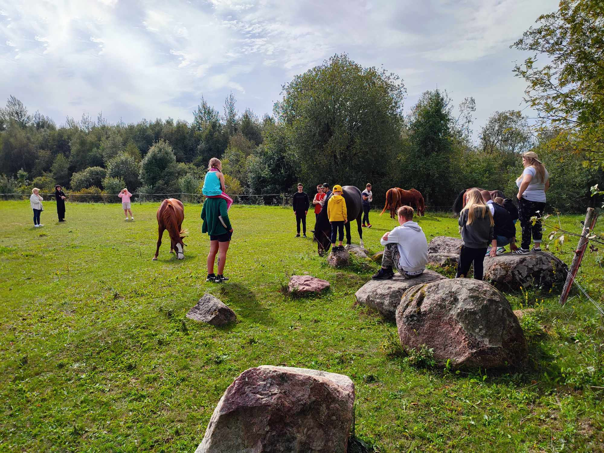

ŽIRGŲ ASISTUOJAMAS MOKYMASIS
„Ryšys tai energija, kuri atsiranda, kai jaučiamės girdimi, matomi ir vertinami, bet ne teisiami.“ - Dr. Brene Brown
Kas yra žirgų asistuojamas mokymasis?
ŽIRGŲ ASISTUOJAMAS MOKYMASIS (angl. EAL – equine assisted learning) arba patyriminis mokymasis su žirgais yra unikali patyriminio mokymosi srities šaka, kurios metu specialiai šiai disciplinai sumodeliuotose veiklose su žirgais skatinamas asmeninis bei profesinis (pvz.lyderystė ir komandos formavimas) tobulėjimas, lavinami socio-emociniai gebėjimai. Tai skirta įvairaus amžiaus žmonėms, kurie:

- vertina smalsumą ir aistrą mokymuisi kiekvieną dieną;
- nemėgsta mokytis tarp keturių sienų;
- ieško nuoširdaus, emociškai saugaus, auginančio santykio su savimi ir aplinka;
- nori pabandyti užmegzti ryšį su žirgu, bet jaučia, kad pramoginis jojimas tam netinka;
- ieško kaip sustiprinti ryšį su šeimos, komandos nariais, klientais, partneriais;
- ieško daugiau gamtos ir natūralios, saugios bei praturtinančios aplinkos sąmoningos asmeninės ir komandinės lyderystės ugdymui.
Žirgai geba identifikuoti daugiau nei metro atstumu stovinčio žmogaus nerimo lygį pagal širdies plakimo dažnį, jie jaučia, ar atsėlinantis liūtas jau pasisotino ar yra vis dar alkanas, užuodžia streso hormoną kortizolį, geba atpažinti emocijas, pasitiki ir prisiriša prie saugumą užtikrinančio lyderio. Žirgai jaučia menkiausią mūsų kūno įtampos ir atsipalaidavimo pokytį ir tai atspindi dabarties momentu keisdami savo elgesį. Žirgai yra socialūs ir empatiški, palaikantys glaudžius tarpusavio ryšius tarp bandos narių žolėdžiai. Gamtoje jie užima plėšrūnų grobio poziciją, todėl yra itin jautrūs juos supančiai fizinei aplinkai.
EAL sesijos metu kalbame ne apie teorinius asmenybės pažinimo modelius ir tapatumą jiems, bet analizuojame savo elgesį, savo asmenybę, mokomės atpažinti savo autentiškus elgesio modelius iškylančius dabarties momente, ieškome jų kilmės priežasčių, įrankių kaip su jais išbūti, juos keisti ar jais pasidžiaugti, stiprinti. Nors EAL nėra orientuotas į psichologinę pagalbos suteikimą ar psichologinių traumų gydymą, tačiau moksliniais tyrimais įrodyta, kad buvimas šalia žirgų normalizuoja širdies ritmą esant pakilusiam streso ar nerimo lygiui bei skatina prieraiškumo ir laimės hormonų (oksitocino ir beta-endorfinų) gamybą, o tai savaime suteikia šalutinį – terapinį poveikį bei atpalaiduoja smegenis atsiverti patirčiai.
Sesijos metu ir po jos galioja konfidencialumo principas. Mūsų erdvė skirta tik Jūsų patyrimui, vienu metu čia nevyksta daugiau užsiėmimų, nėra papildomų lankytojų, užtikrinamas privatumas.

KOKIA NAUDA?
Saugi ir neteisianti žirgų draugija bei natūrali aplinka gali padėti:
- Įsigalinti imtis lyderystės sudėtingose situacijose;
- Ugdyti asmeninius ir kasdienio gyvenimo, savikontrolės, atsparumo įgūdžius;
- išsigryninti bendradarbiavimo ir komunikacijos tikslumo svarbą;
- Ugdyti emocinį ir socialinį raštingumą;
- Sustiprinti asmeninės ir lyderystės grupėje įgūdžius;
- būti pažeidžiamiems ir priimti visus savo jausmus suvokiant autentiškumo svarbą;
- suteikia galimybę iš karto patirti pasikeitusio elgesio pasekmes ir pozityvaus pokyčio rezultatą.
SVARBU: Jojimas į užsiėmimo tikslus neįeina. Užlipimas ant žirgo tikėtinas kaip sudedamasis komponentas siekiant pojūčių subalansavimo. Užsiėmimai yra orientuoti į asmeninį mokymąsi, savęs pažinimą, o ne žirgininkystės ar jojimo įgūdžių įgavimą. Norėdami mokytis žirgininkystės, prisijunkite prie NATŪRALIOS ŽIRGININKYSTĖS KLUBO .

KAIP NEPASIKLYSTI ŽIRGŲ PASLAUGŲ SRITYSE
Sąvoka Žirgų terapija arba kitaip hipoterapija Europoje yra naudojamas kaip bendrinis terminas, nesuteikiantis jokios konkrečios informacijos apie tai, kokių paslaugų iš tikrųjų ieškote. JAV bei Australijoje toks bendrinis terminas yra žirgų asistuojamos paslaugos.
Žirgų asistuojamos paslaugos arba hipoterapija yra skirstoma į dar tris sritis:
Žirgų asistuojama terapija - tai yra dažniausiai su fiziniu kūnu, intelekto bei raidos sutrikimais susijusi terapija, kurią atlieka savo srities terapeutas į terapines sesijas integruodamas veiklas su žirgais. Įprastos sritys: kineziterapija, ergoterapija, kalbos terapija ir pan.
Žirgų asistuojama psichoterapija – tai yra į psichinę sveikatą orientuota sritis, kurią atlieka savo srities specialistas – diplomuotas psichologas ar psichoterapeutas.
Žirgų asistuojamas mokymasis arba patyriminis mokymasis su žirgais – tai yra patyriminio mokymosi sritis, orientuota į visapusišką asmenybės tobulėjimą, galinti integruoti veiklas su žirgais įvairiose temose, pavyzdžiui: joga su žirgais, mindfulness praktikos su žirgais, dailės terapija su žirgais, streso reguliavimas su žirgais ir kt. Šias paslaugas gali teikti patyriminio ugdymo praktikai, pedagogai, jogos treneriai, dailės, muzikos terapeutai ir kiti savo sričių specialistai. (Yra bandymų šiai sričiai suteikti nuo originalo nutolusį lietuvišką pavadinimą - psichoedukacijos su žirgais, tačiau tai nėra labai tikslu, nes į asmenybės tobulėjimą orientuoti užsiėmimai yra ne edukacijos formato.)
Jeigu paslaugos teikėjas Jums siūlo tiesiog žirgų terapiją arba hipoterapiją – paprašykite patikslinti, į ką bus orientuoti užsiėmimai: į fizinę terapiją, pscihikos sveikatą ar asmenybės tobulėjimą. Nors Lietuvoje ši sritis dar nėra išplėtota, tačiau specialistai, besimokantys tiek JAV, tiek Australijoje tiek Europoje turėtų būti supažindinami su žirgų asistuojamų paslaugų sritimi ir sąvokas naudoti pagal paskirtį, kad neklaidintų klientų ir aiškiai formuluotų užsiėmimo paskirtį. Visada pasitikrinkite.
ŽIRGŲ ASISTUOJAMA PSICHOTERAPIJA
EAP (angl. Equine assisted psychotherapy) yra klinikinė bei psichoterapinė praktika, kurios metu klientai kviečiami patirti saugų santykį su žirgais siekdami terapinių tikslų. EAP specialistas privalo būti sertifikuotas ir turėti psichoterapeuto išsilavinimą. Žirgas dalyvauja traumų, PTSD, depresijos, valgymo ar nerimo ir kitų sutrikimų gydymo kelyje.
KODĖL TAI VEIKIA?
Žirgai priima žmogų besąlygiškai, tad užpildo prieraišumo, saugumo spragas, garantuoja socialinę paramą, abipusiškumą. Žirgas yra neverbalinis gyvūnas, todėl skaito žmogaus kūno kalbą, užuodžia hormonus ir neleidžia pasislėpti po įmantriomis gynybomis atspindėdamas esamuoju momentu. Žirgas yra žolėdis, prigimtinai susireguliuojantis savo nervų sistemą akimirksniu, vos išnykus pavojui, tad jis gali tapti atrama, šalutiniu teigiamu efektu, tiesiogiai darydamas įtaką nervų sistemos koreguliacijos procesui. Žirgai, užtikrindami saugumą, atstato pažeistą (neuro)suvokimą ir išlikimo mechanizmai, besiaktyvuojantys santykyje su kitu (dideliu, galingu, laisvu, bet saugiu, ieškančiu kontakto), nustoja veikę prieš juos pačius.Žirgų asistuojama psichoterapijos sesijos vyks nuo 2025 m.pavasario